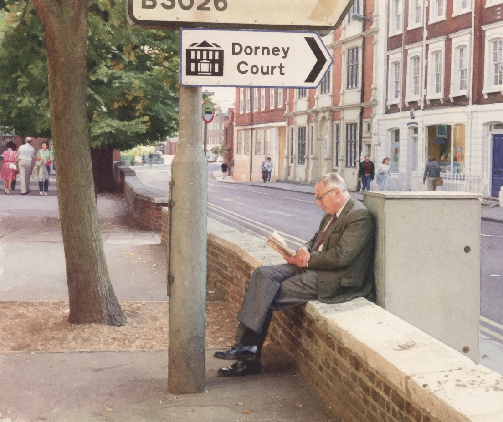

Twenty-five human tendencies, after Charlie Munger.A list of psychology-based tendencies that, while generally useful, often mislead.Tap a card to turn it over.

click the card to flip · ← → to browse · esc to close